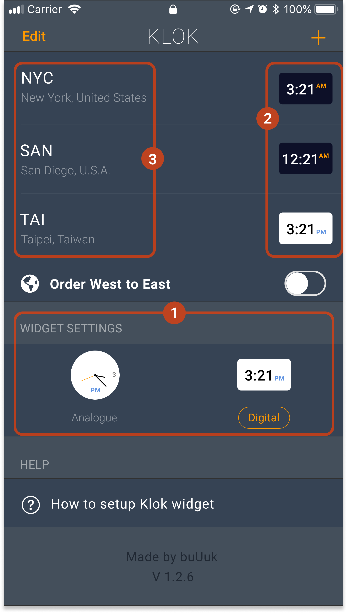
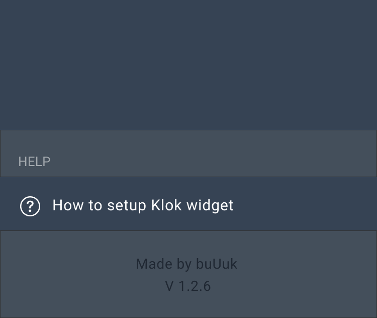

Part 1. Home Screen
Identifying the Problems
Problem 1: Misplaced Focal Point
I conducted a survey, asking people the elements that caught their attention first. Most people said they first saw the widget setting first.(Area 1) Some said they saw the time display for city first.(Area 2). Only a few said they saw the city names first.(Area 3)

The main purpose of this app is to customize the widget settings so it's expected that the focal point would be on the widget setting area. However, the reason why people saw this area first is actually because of the color contrast, instead of a strategically thought out UX design.
Currently the widget setting area shows time with a white background because it's daytime at my current location. This means that when it's night time, the background will turn black and the focal point will change which could create confusion and annoyance.
The time zones are in a list-like display, making the city name and abbreviations very far away from the time. The distance between the 2 elements make it hard for users to understand what the most important information is.
Unfulfilled heuristics: #7: Flexibility and efficiency of use
Problem 2: Confusing Button Purpose
On the home screen, there are currently 2 buttons that give users the freedom of customization. One being "order west to east / east to west", another being "analogue / digital". The type of these 2 buttons are different, hence the confusion. One is an on-off button, the other is to directly select the setting you want. Why are these 2 buttons of different types? They serve the same purpose - to give users freedom to change the setting to what they want.
The button state for order west to east and east to west shows one being "active" another being "inactive". This confuses users as to what the button and the selection mean and what they would get after the click on the button.
Unfulfilled heuristics: #7: Flexibility and efficiency of use, #1: Visibility of system status, #4: Consistency and standards
Problem 3: Position of Help and Information About the App

The help section and information about the app take up and pretty big section of the screen and are in the users' natural thumb zone which creates uncomfort and confusion. They are the least important information but are in the way when users are using the app. Also make users wonder if they are something that need to be carefully looked over as a part of setting up process.
Unfulfilled heuristics: #7: Flexibility and efficiency of use
Fixing the Home Screen
1: Misplaced Focal Point
Create better visual hierarchy, restructure time display so users can see what's most important. Enlarge texts and reduce distance between each element for better eye-tracking.
2: Confusing Button Purpose
Allow users to be able to customize everything in the same area and make the button appearance the same to show that they are both something for the users to select and the change the same thing
3: Position of Help and Info
Get rid of unnecessary information or move them somewhere else that's not in the users' way.
Ideation and Sketches
I sketched out a few ideas for redesigning the UX and interface to determine which one would be the best solution.
Design A isn't the best solution because it doesn't perfecly align with the app goal - to customize the widget setting. Since in the widget area, the time zones have orders and are displayed on a horizontal line, if the app had this card-like display in 2 columns, it would create confusion and users have a spend time to understand the order of time display.
Design b satisfies all the problem areas described but by having 2 columns for time display and setting instead of 2 rows, it creates a feeling of clutter and annoyance.
Design C was the best choice. The keeping of the list display and setting area, I didn't made any unnecessary changes that would confuse the users. I enlarged the texts and time display and groups the settings buttons.
After a round of usability testing, I found that:
1) the option for ordering West to East / East to West isn't necessary as users prefer manually changing the display order to their preference.
2) Enlarged texts and time display creates better visual hierarchy for users to quickly understand what they are seeing and how to navigate the app.